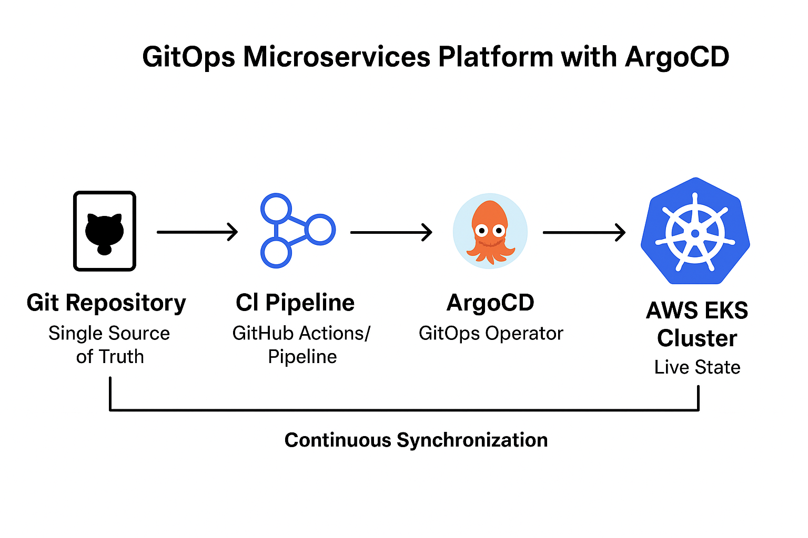

Multi-Region Cloud-Native Microservices Platform with GitOps
Challenge
The organization required a scalable, cloud-native solution for running microservices that could be managed consistently across environments. The key challenge was establishing an automated, auditable, and reliable deployment model that minimized manual cluster interaction.
Solution Overview
I established an AWS EKS (Elastic Kubernetes Service) cluster and implemented a fully declarative GitOps model using ArgoCD to manage the application state.
- Orchestration: Kubernetes (AWS EKS), Helm
- GitOps: ArgoCD
- CI: GitHub Actions, Docker, Amazon ECR
- Observability: Prometheus, Grafana
Architectural Flow (GitOps)
This model separates the Configuration (Git) from the Deployment (ArgoCD):
- A developer updates the application code in the App Repository.
- A CI Pipeline (GitHub Actions) builds the Docker image and pushes it to Amazon ECR.
- The CI Pipeline automatically updates the new image tag in the Git Configuration Repository (manifests/Helm charts).
- ArgoCD (running inside EKS) continuously monitors the Git Config Repository.
- If a change is detected, ArgoCD automatically **synchronizes** the EKS cluster to match the desired state in Git, initiating the deployment.
GitOps Platform Architecture Diagram:

Key Responsibilities & Impact
ArgoCD Implementation:
- I implemented ArgoCD in the AWS EKS cluster, establishing the Git repository as the single source of truth for the desired application state.
- Configured auto-sync and self-healing capabilities, ensuring the live state always conforms to the repository.
- Impact: This GitOps implementation eliminated manual deployments, reduced rollback time by 90%, and provided a full, auditable deployment history.
Containerization and Observability:
- Packaged and optimized application services using Docker and Helm charts for standardized deployment.
- Integrated Prometheus for monitoring and Grafana for visualization, providing deep insights into cluster and microservice performance.
- Impact: Enhanced resource utilization and greatly improved diagnostic capability and mean-time-to-resolution (MTTR).